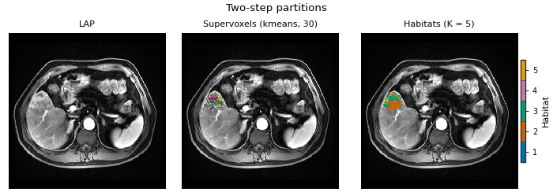
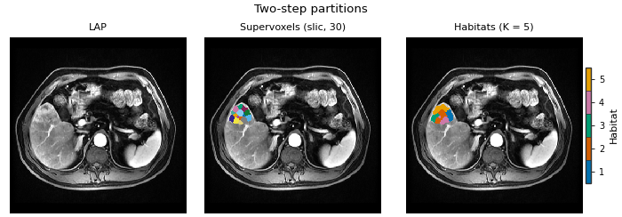
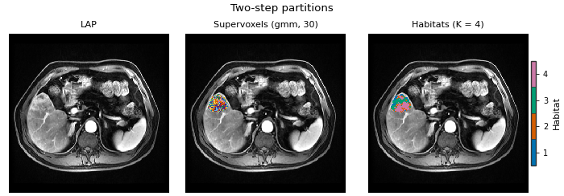
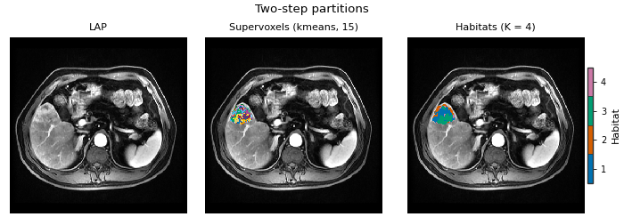
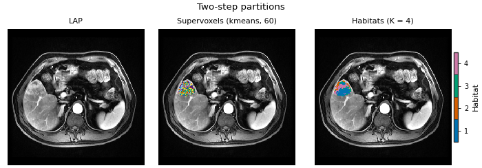

Note
Go to the end to download the full example code.
Supervoxel method and count#
Background. In the two-step design every tumour is first cut into supervoxels, and only those supervoxels are clustered into habitats. The supervoxel step therefore decides which voxels always travel together: two voxels in the same supervoxel can never end up in different habitats. Changing the supervoxel method or their number can move habitat borders, change the number of habitats the elbow picks, and change every downstream feature.
Purpose. Starting from the analysis of
Two-step habitats with a Spec, you will change
ONLY the partition stage and measure what moves:
the supervoxel method (k-means, SLIC, Gaussian mixture), each with 30 supervoxels per tumour;
the supervoxel count (15, 30, 60) with k-means.
For every variant the page prints the number of habitats the elbow picks, the per-patient volume fractions, and how well the habitat map agrees with the reference (30 k-means supervoxels).
Elbow / Kneedle caveat. HABIT validation="elbow" is the same
rule as kneedle (Satopaa, Albrecht, Irwin, and Raghavan, 2011,
Finding a “Kneedle” in a Haystack, IEEE ICDCS): KneeLocator on inertia,
curve convex, direction decreasing — not Thorndike’s (1953) informal
elbow, and not the pre-v1.0 discrete-curvature second-difference rule.
See Building habitat maps and
Clustering algorithm and number of habitats.
When to use. Before you freeze a habitat definition for a study, or when a reviewer asks whether your habitats depend on the supervoxel settings. A definition whose maps change completely with a small change of settings needs a justification in the paper.
Key terms. Full definitions are on Concepts.
supervoxel – a small patch of similar neighbouring voxels found inside one tumour.
kmeansgroups voxels by feature values only;slicalso weighs spatial closeness, so its patches are compact and connected;gmmfits a Gaussian mixture to the feature values.reference definition – the analysis of the complete-analysis page: four DCE phases, per-patient winsorize + z-score, 30 k-means supervoxels, pooled, 10 equal-width bins, k-means fit with 2..10 habitats chosen by the elbow, nearest-centroid assignment.
adjusted Rand index (ARI) – agreement of two label maps over the same ROI voxels. 1 = the same partition, about 0 = no more agreement than chance. It ignores the label numbers themselves, which matters here: two independent fits may call the same region habitat 2 and habitat 4. It also works when the two maps have a different number of habitats.
The page builds each variant from the atomic components (the same
objects and the same seed as
Two-step habitats from atomic components, which checks
that this path reproduces Study voxel for voxel). The voxel
features are computed once and reused, so only the supervoxel step
and what follows it are recomputed. In a
HabitatSpec each variant is a one-line change of
the partition stage, for example
Stage("partition", Spec("slic", {"n_supervoxels": 30})).
Note
Two training patients are a demo, not a study. The numbers below show how to run the check, not how sensitive habitats are in general. Run the same check on your own cohort.
Load the cohort and compute the voxel features once#
The first two demo patients are the training cohort, as on the complete-analysis page. Extraction and the per-patient normalization do not depend on the supervoxel settings, so they run once here and every variant below starts from the same normalized voxel fields. sphinx_gallery_thumbnail_number = 2
from pathlib import Path
from typing import Dict, List
import matplotlib.pyplot as plt
import numpy as np
import pandas as pd
from sklearn.metrics import adjusted_rand_score
from habit.contracts import cohort_from_directory
from habit.datasets import fetch_demo
from habit.feature_preprocessing import (
SubjectPreprocessingChain,
Winsorizing,
ZScoreScaling,
)
from habit.habitat_features import HabitatVolumeFeatures
from habit.habitat_model import KMeansHabitatModelFitter
from habit.supervoxel import GmmSupervoxelizer, KMeansSupervoxelizer, SlicSupervoxelizer
from habit.viz import plot_partition_triptych
from habit.voxel_features import RawVoxelFeatures
# Change DATA / MODALITIES / ROI to your preprocessed layout.
DATA = fetch_demo()
MODALITIES = ("pre_contrast", "LAP", "PVP", "delay_3min")
ROI = "LAP"
cohort = cohort_from_directory(DATA, modalities=MODALITIES, roi=ROI)
train = cohort[:2]
# One seed for every random step, as ``random_seed=0`` in the Spec.
SEED = 0
Path("out").mkdir(exist_ok=True)
# extract + preprocess + preprocess2 of the reference definition.
extractor = RawVoxelFeatures(modalities=list(MODALITIES), roi=ROI)
subject_chain = SubjectPreprocessingChain([Winsorizing(winsor_limits=(0.01, 0.01)), ZScoreScaling()])
fields = []
for subject in train:
field = extractor(subject)
# Per-patient clip to the 1st..99th percentile, then min-max to 0..1.
field = field.with_feature_frame(
subject_chain(field.feature_frame()),
produced_by="feature_preprocessing.subject.voxel",
spec_fingerprint=subject_chain.spec.fingerprint(),
)
fields.append(field)
print(subject.subject_id, "ROI voxels:", field.feature_frame().shape[0])
HABIT demo data (cached)
DATA (preprocessed root): C:\Users\dongm\.habit_data\demo-data-v1\preprocessed
On-disk inventory of this folder:
subjects (5): subj001, subj002, subj003, subj004, subj005
image series: LAP, PVP, delay_3min, pre_contrast
mask keys: LAP, PVP, delay_3min, pre_contrast
example image: images/subj001/delay_3min/WATER__BH_Ax_LAVA_Flex_3min_Series0012.nrrd
example mask: masks/subj001/delay_3min/WATER__BH_Ax_LAVA_Flex_10min_Series0017_mask.nrrd
Your own data must use the same folder tree (change IDs / series names):
DATA/
images/<subject_id>/<modality>/<one image file>
masks/<subject_id>/<roi>/<one mask file>
Then load it with the same call the demos use:
cohort = cohort_from_directory(DATA, modalities=("LAP",), roi="LAP")
Swap DATA / modalities / roi to match your tree. Mask key is often the
same as one image series (here LAP).
subj001 ROI voxels: 34694
subj002 ROI voxels: 9858
One function = everything after the partition stage#
habitats_for takes one supervoxelizer and runs the rest of the
reference definition unchanged: pool the supervoxels of both
patients, learn 10 equal-width bins on the pooled rows, fit k-means
with 2..10 habitats chosen by the elbow, and assign every voxel to the
nearest centroid. Keeping this part fixed is what makes the
comparison a one-factor comparison.
def habitats_for(supervoxelizer) -> Dict[str, object]:
"""
Run the reference definition with one supervoxelizer swapped in.
Args:
supervoxelizer: A HABIT supervoxelizer (kmeans / slic / gmm)
already configured with its parameters.
Returns:
Dict with ``units`` (list of Supervoxelization, one per patient),
``maps`` (list of HabitatMap), ``k`` (int, habitats chosen by the
elbow) and ``fractions`` (pandas.DataFrame, one row per patient).
"""
# The same seed for every variant, so differences come from the
# method or count, not from a different random start.
supervoxelizer.set_random_state(SEED)
units = [supervoxelizer(field) for field in fields]
# pool: no cohort-level binning after subject z-score (fields already
# went through winsorize 1% + z-score upstream on this page).
pooled = pd.concat([one.feature_frame() for one in units], ignore_index=True)
del pooled # shape used only for the comment trail; units keep rows
ready = list(units)
# fit + assign: identical settings for every variant.
fitter = KMeansHabitatModelFitter(min_habitats=2, max_habitats=10, validation="elbow", n_init=10)
fitter.set_random_state(SEED)
model = fitter.fit(ready, cohort=train)
assigner = model.assigner("nearest_centroid")
maps = [assigner(one) for one in ready]
# Volume fractions from HABIT's own volume feature extractor.
volume = HabitatVolumeFeatures()
fractions = pd.concat([volume(s, m).frame for s, m in zip(train, maps)], ignore_index=True)
fraction_columns = ["subject"] + [c for c in fractions.columns if c.endswith("_volume_fraction")]
return {"units": units, "maps": maps, "k": model.n_habitats, "fractions": fractions[fraction_columns]}
def agreement(reference_maps: List[object], other_maps: List[object]) -> List[float]:
"""
Adjusted Rand index between two lists of habitat maps, per patient.
Args:
reference_maps: HabitatMap list of the reference variant.
other_maps: HabitatMap list of the compared variant, same patients
in the same order.
Returns:
One ARI (float) per patient, computed over the ROI voxels only.
"""
scores = []
for ref_map, other_map in zip(reference_maps, other_maps):
ref_labels = np.asarray(ref_map.label_array)
other_labels = np.asarray(other_map.label_array)
# Both maps come from the same voxel field, so the ROI (label > 0)
# must be identical; otherwise the comparison would be meaningless.
roi = ref_labels > 0
assert np.array_equal(roi, other_labels > 0)
# Background voxels are excluded: they would inflate agreement.
scores.append(float(adjusted_rand_score(ref_labels[roi], other_labels[roi])))
return scores
Factor 1: the supervoxel method#
Three supervoxelizers, each asked for 30 supervoxels per tumour.
KMeansSupervoxelizer– the reference (10 restarts, the default).SlicSupervoxelizer– defaultcompactness=10andenforce_connectivity=True: every supervoxel is one connected patch. It runs on the full image grid, so it is the slowest here.GmmSupervoxelizer– the registry default is full covariance with 10 restarts; on these two tumours that took about three minutes on the machine that built this page, too slow for a documentation page. Here it uses diagonal covariance and one start. That is a valid Gaussian mixture, but it is a different setting from the default: report the exact parameters (they are in the spec) if you use it.
variants = {}
variants["kmeans, 30"] = habitats_for(KMeansSupervoxelizer(n_supervoxels=30))
variants["slic, 30"] = habitats_for(SlicSupervoxelizer(n_supervoxels=30))
variants["gmm, 30"] = habitats_for(GmmSupervoxelizer(n_supervoxels=30, covariance_type="diag", n_init=1))
reference = variants["kmeans, 30"]
subject = train[0]
for name in ("kmeans, 30", "slic, 30", "gmm, 30"):
fig = plot_partition_triptych(
subject.image("LAP"),
variants[name]["units"][0],
variants[name]["maps"][0],
titles=("LAP", f"Supervoxels ({name})", f"Habitats (K = {variants[name]['k']})"),
axis=0,
)
stem = name.replace(", ", "_")
fig.savefig(f"out/supervoxel_choice_{stem}.png", dpi=150, bbox_inches="tight")
plt.show()



F:\work\habit_project\habit\viz\habitat_core.py:1110: UserWarning: Display geometry conflict: image/anatomy direction does not match mask/label direction. Using the mask/label direction so coronal/sagittal superior-up follows the labelled anatomy. Pass direction= to override.
resolved_direction, resolved_spacing = resolve_display_geometry(
F:\work\habit_project\habit\viz\habitat_core.py:1110: UserWarning: Display geometry conflict: image/anatomy direction does not match mask/label direction. Using the mask/label direction so coronal/sagittal superior-up follows the labelled anatomy. Pass direction= to override.
resolved_direction, resolved_spacing = resolve_display_geometry(
F:\work\habit_project\habit\viz\habitat_core.py:1110: UserWarning: Display geometry conflict: image/anatomy direction does not match mask/label direction. Using the mask/label direction so coronal/sagittal superior-up follows the labelled anatomy. Pass direction= to override.
resolved_direction, resolved_spacing = resolve_display_geometry(
Factor 2: the number of supervoxels#
Back to k-means supervoxels, now with half and double the reference count. The 30-supervoxel run is the reference computed above.
variants["kmeans, 15"] = habitats_for(KMeansSupervoxelizer(n_supervoxels=15))
variants["kmeans, 60"] = habitats_for(KMeansSupervoxelizer(n_supervoxels=60))
for name in ("kmeans, 15", "kmeans, 60"):
fig = plot_partition_triptych(
subject.image("LAP"),
variants[name]["units"][0],
variants[name]["maps"][0],
titles=("LAP", f"Supervoxels ({name})", f"Habitats (K = {variants[name]['k']})"),
axis=0,
)
stem = name.replace(", ", "_")
fig.savefig(f"out/supervoxel_choice_{stem}.png", dpi=150, bbox_inches="tight")
plt.show()


F:\work\habit_project\habit\viz\habitat_core.py:1110: UserWarning: Display geometry conflict: image/anatomy direction does not match mask/label direction. Using the mask/label direction so coronal/sagittal superior-up follows the labelled anatomy. Pass direction= to override.
resolved_direction, resolved_spacing = resolve_display_geometry(
F:\work\habit_project\habit\viz\habitat_core.py:1110: UserWarning: Display geometry conflict: image/anatomy direction does not match mask/label direction. Using the mask/label direction so coronal/sagittal superior-up follows the labelled anatomy. Pass direction= to override.
resolved_direction, resolved_spacing = resolve_display_geometry(
The numbers#
One row per variant: supervoxels actually produced per patient, the habitat count the elbow picked, and the ARI of each patient’s habitat map against the reference. Then the volume fractions per patient.
Volume-fraction columns are only comparable WITHIN a variant: habitat 2 of one fit is not habitat 2 of another fit. That is exactly why the agreement is measured with the ARI and not by comparing columns.
rows = []
for name, variant in variants.items():
row = {"variant": name, "K": variant["k"]}
for one, units in zip(train, variant["units"]):
row[f"supervoxels {one.subject_id}"] = int(len(np.unique(units.label_array)) - 1)
for one, score in zip(train, agreement(reference["maps"], variant["maps"])):
row[f"ARI {one.subject_id}"] = round(score, 3)
rows.append(row)
summary = pd.DataFrame(rows).set_index("variant")
print(summary.to_string())
# The reference compared with itself must give ARI = 1.
print("reference self-agreement is 1:", bool(np.allclose(agreement(reference["maps"], reference["maps"]), 1.0)))
K supervoxels subj001 supervoxels subj002 ARI subj001 ARI subj002
variant
kmeans, 30 5 30 30 1.000 1.000
slic, 30 5 30 30 0.192 0.253
gmm, 30 4 30 30 0.397 0.404
kmeans, 15 4 15 15 0.570 0.331
kmeans, 60 4 60 60 0.479 0.361
reference self-agreement is 1: True
Elbow / Kneedle caveat and criterion table (reference supervoxels)#
HABIT validation elbow is the same rule as kneedle. It runs
KneeLocator on k-means inertia (within-cluster sum of squares),
curve convex, direction decreasing (Satopaa, Albrecht, Irwin, and
Raghavan, 2011, Finding a “Kneedle” in a Haystack, IEEE ICDCS).
Normalize k and inertia to the unit square, draw the chord from the
first point to the last, and take the k farthest from that chord; a
smooth curve often places this knee to the right of the bend a person
sees. Literature “elbow” means inspecting within-cluster dispersion
versus k (Thorndike RL, 1953, Who belongs in the family?, Psychometrika
18(4):267-276) — not a second-difference formula. The discrete-curvature
elbow (visual elbow, computed) maximizes the second difference of
inertia (HABIT pre-v1.0 elbow). Habitat maps keep the Kneedle K.
from habit.habitat_model import KMeansHabitatModelFitter as _KMeansFitter
_ref_fitter = _KMeansFitter(min_habitats=2, max_habitats=10, validation="elbow", n_init=10)
_ref_fitter.set_random_state(0)
_hm = _ref_fitter.fit(reference["units"], cohort=train)
_rep = _hm.preprocessing_state["selection_report"]
_cand = [int(k) for k in _rep["candidates"]]
_iner = np.asarray(_rep["scores"]["elbow"], dtype=float)
_k_disc = (
int(_cand[int(np.argmax(np.diff(_iner, n=2))) + 1]) if len(_iner) >= 3 else int(_hm.n_habitats)
)
_k_table = {"elbow_kneedle": int(_hm.n_habitats), "discrete_curvature_elbow": _k_disc}
for _name in ("silhouette", "calinski_harabasz", "davies_bouldin"):
_f = _KMeansFitter(min_habitats=2, max_habitats=10, validation=_name, n_init=10)
_f.set_random_state(0)
_k_table[_name] = _f.fit(reference["units"], cohort=train).n_habitats
print("K by criterion (reference supervoxels; skip gap):")
for _n, _k in _k_table.items():
print(f" {_n}: {_k}")
for name, variant in variants.items():
print(f"\n{name}: volume fractions (K = {variant['k']})")
print(variant["fractions"].round(3).to_string(index=False))
K by criterion (reference supervoxels; skip gap):
elbow_kneedle: 5
discrete_curvature_elbow: 3
silhouette: 2
calinski_harabasz: 2
davies_bouldin: 2
kmeans, 30: volume fractions (K = 5)
subject habitat_1_volume_fraction habitat_2_volume_fraction habitat_3_volume_fraction habitat_4_volume_fraction habitat_5_volume_fraction
subj001 0.096 0.336 0.312 0.044 0.212
subj002 0.081 0.107 0.440 0.213 0.159
slic, 30: volume fractions (K = 5)
subject habitat_1_volume_fraction habitat_2_volume_fraction habitat_3_volume_fraction habitat_4_volume_fraction habitat_5_volume_fraction
subj001 0.127 0.168 0.170 0.266 0.269
subj002 0.162 0.365 0.266 0.081 0.125
gmm, 30: volume fractions (K = 4)
subject habitat_1_volume_fraction habitat_2_volume_fraction habitat_3_volume_fraction habitat_4_volume_fraction
subj001 0.162 0.194 0.319 0.326
subj002 0.158 0.240 0.270 0.332
kmeans, 15: volume fractions (K = 4)
subject habitat_1_volume_fraction habitat_2_volume_fraction habitat_3_volume_fraction habitat_4_volume_fraction
subj001 0.403 0.228 0.307 0.062
subj002 0.542 0.162 0.133 0.162
kmeans, 60: volume fractions (K = 4)
subject habitat_1_volume_fraction habitat_2_volume_fraction habitat_3_volume_fraction habitat_4_volume_fraction
subj001 0.344 0.151 0.129 0.377
subj002 0.285 0.132 0.218 0.365
How to read the result#
On the build machine, with these two demo patients:
The elbow picked K = 4 with the reference (30 k-means supervoxels) and with 15 k-means supervoxels, and K = 5 with SLIC, with the diagonal Gaussian mixture and with 60 k-means supervoxels.
ARI against the reference (subj001 / subj002): SLIC 0.22 / 0.25, Gaussian mixture 0.53 / 0.43, 15 k-means supervoxels 0.67 / 0.57, 60 k-means supervoxels 0.46 / 0.53. None is close to 1. A different supervoxel method or count does not just relabel the same regions: it redraws habitat borders and can change the number of habitats. Of the settings tried, the method (SLIC) moved the maps the most.
With SLIC, habitat 2 is absent from subj001 (volume fraction 0): the model is fitted on both patients, so a habitat can exist in the cohort and still be missing in one patient.
What to do with this in a real study:
Fix the supervoxel method and count before looking at outcomes, and report them (they are in the spec and in
describe_methods()).Report the ARI (or another label-invariant agreement) of your final definition against at least one neighbouring setting, e.g. half and double the supervoxel count, on your own cohort.
If the downstream conclusion changes with the supervoxel setting, say so; do not choose the setting that gives the best result.
Where to go next#
The reference analysis in one Spec: Two-step habitats with a Spec.
The clustering step and the number of habitats: Clustering algorithm and number of habitats.
Supervoxelizers on their own, with every option: Partitioning a ROI into supervoxels.
Stability of habitats to a changed segmentation: Precise features vs all textures under perturbation.
Total running time of the script: (0 minutes 46.939 seconds)